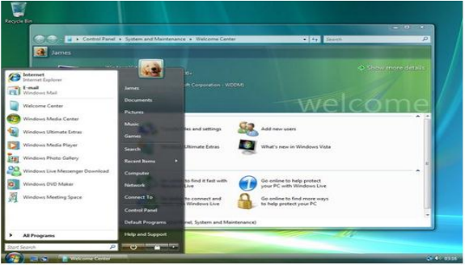

Apa Itu Windows?
Windows merupakan salah satu operating system yang dikembangkan oleh Microsoft Inc, salah satu perusahaan software komputer terbesar di dunia. Sebagai operating system yang paling banyak digunakan di dunia, sudah tentu perkembangan windows ini sangat menarik untuk diikuti karena dari tahun ke tahun, selalu ada pengembangan yang diterapkan demi kepuasan penggunanya.
Windows Dari Masa ke Masa
Windows 1.0

"Windows ini dirilis pada tanggal 20 November 1985. Diberi nama “Windows” oleh Rowland Hanson, marketing manager Microsoft Corporation. Hanya memperluas kemampuan MS-DOS dengan menambah antarmuka grafis Microsoft Paintbrush, Write, Notepad, Calender, Calculator, CardFile, dan juga Clipboard."
Windows 2.0

"Operating sistem kedua yang diluncurkan oleh microsoft adalah windows 2.0 yang rilis pada tanggal 9 desember 1987. Selama dua tahun pengembangan, Bill Gates berhasil menemukan fitur maximize dan minimize pada aplikasi yang sedang dibuka pada windows 2.0 ini. Dari segi desain, windows 2.0 ini masih sama dengan windows 1.0 yang menggunakan skema 16 bit."
Windows 2.1
"Muncul 2 versi baru, Windows/286 2.1 dan Windows/386 2.1 Masih menggunakan modus real tapi mendukung High Memory Area (HMA) Menggunakan kernel yang berjalan dalam modus terproteksi (Windows/386 2.1) Mampu menampilkan jendela windows secara cascade (bertumpuk)."
Windows 3.0
"Windows ini Dirilis 22 Mei 1990 diperkenalkan fitur Virtual Memory. Sudah menggunakan kartu Video Graphics Array (VGA) dan Versi Windows pertama yang menggunakan modus terproteksi Win /r didalam modus real, Win /s didalam modus standard, Win /3 didalam modus 386 standard"
Windows NT 3.1
"Dirilis 6 April 1992 Dukungan terhadap multimedia Modus real dihilangkan, menggunakan modus terproteksi Mulai menggunakan kernel hibrida Diperkenalkan sistem berkas NTFS Muncul Windows 3.11 pada 8 November 1993, merupakan penyempurnaan Windows 3.1"
Windows 95
"Windows ini Dirilis 24 Agustus 1995 Diperkenalkan teknologi Plug and Play (PnP). Menggunakan kernel 32-bit Menggunakan Sistem Operasi DOS buatan Microsoft sendiri Support perangkat keras berbasis bus (USB)"
Windows 98
"Windows ini Dirilis 25 Juni 1998 Mendukung sistem berkas FAT32 (mengijinkan partisi lebih dari 2Gb). Built-in Internet Explorer Diperkenalkan Internet Connection Sharing, yang merupakan sebuah bentuk dari Network Address Translation, yang mengizinkan beberapa mesin di dalam sebuah jaringan lokal agar dapat menggunakan satu buah jalur koneksi Internet bersama-sama"
Windows 2000
"Dirilis 17 Februari 2000 Active Directory, sebuah model jaringan pengganti model jaringan NT domain, yang menggunakan teknologi yang merupakan standar industri, seperti Domain Name System (DNS), Lightweight DirectoryAccess Protocol (LDAP), dan Kerberos untuk menghubungkanantara sebuah mesin ke mesin lainnyaMerupakan versi Windows berbasis kernel NT terakhir yang tidak mengharuskan penggunanya untuk melakukan aktivasi"
Windows ME
"Dirilis 14 September 2000 Diperkenalkan fitur System Restore Diperkenalkan fitur Windows Movie Maker Versi windows terakhir yang menggunakan kernel monolithic dan tidak memiliki Windows Product Activation (WPA) "
Windows XP
"Dirilis 25 Oktober 2001 Versi Windows paling sempurna dibandingkan dengan versi-versi sebelumnya, setidaknya sampai Windows Vista dirilis Menggunakan kernel NT 5.1 yang terkenal dengan kestabilannya "
Windows Server 2003
"Dirilis 25 April 2003 Digunakan untuk komputer ber-basis server, dengan dihilangkannya beberapa fitur, dengan alasan kestabilan Fitur keamanan yang baru, pemandu "Manage Your Server wizard" yang menyederhanakan peranan sebuah mesin yang menjalankannya, dan juga peningkatan kinerja Menggunakan kernel NT 5.2 "
Windows Vista

"Untuk bisnis dirilis 30 November 2006 Untuk rumahan dirilis 30 Januari 2007 Menggunakan kernel NT 6.0 Fitur Windows Aero GUI, aplikasi yang baru (seperti halnya Windows Calendar, Windows DVD Maker dan beberapa game baru termasuk Chess Titans, Mahjong, dan Purble Place ) Menawarkan versi Microsoft Internet Explorer yang lebih aman, serta Windows Media Player versi baru (versi 11) "
Windows Home Server

"Dirilis tanggal 7 Januari 2007 Didesain khusus untuk digunakan oleh para konsumen dari pengguna rumahan(server) Dapat dikonfigurasikan dan dipantaudengan menggunakan program console yang dapat diinstalasikan pada sebuah PC klien "
Windows Server 2008
"Dirilis 27 Februari 2008 Pada saat pengembangannya, WindowsServer memiliki nama kode "Windows Server Codenamed Longhorn” Dibangun menggunakan keunggulan dan keamanan Windows Vista untuk penyempurnaan dari Windows Server 2003"
Windows 7

"Generasi penerus Windows Vista, diperkirakan rilis tahun 2010 Dikenal dengan sebutan Blackcomb dan Vienna "
Windows 8

"Tanggal 13 September 2011, build 8102 (Windows 8 Developer Preview) dirilis ke publik. Pada tanggal 29 Februari 2012, Microsoft meluncurkan Windows 8 Consumer Preview, versi beta dari Windows 8, build 8250. Untuk pertama kalinya sejak Windows 95, tombol Start tidak lagi muncul di taskbar "
Windows 10
"Windows 10 merupakan rilisan dari pengembang atau penemu Windows yang akan dirilis mendatang dari sistem operasi Microsoft Windows. Diperkenalkan pada tanggal 30 September 2014, akan dirilis pada akhir tahun 2015 "